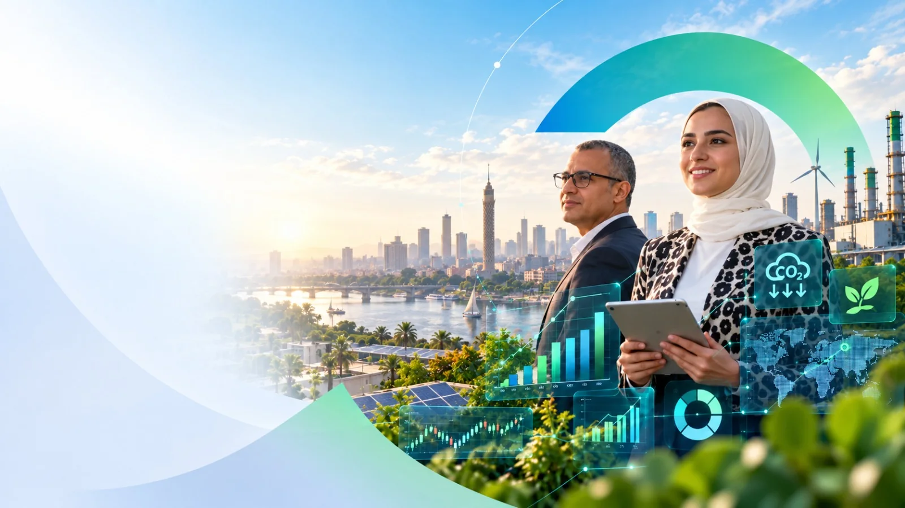

01
استشارات الاستدامة والاقتصاد
استراتيجية الاستدامة والتحليل الاقتصادي وأثر السياسات ودمج ESG للشركات والمؤسسات المالية.
استكشف الخدمة →قدرات iESG
حلول استشارية متكاملة في الاستدامة وESG والكربون والتكنولوجيا.
من الاستراتيجية إلى التنفيذ
اختر الخدمة المناسبة أو تواصل معنا لبناء نطاق عمل متكامل يناسب احتياجات مؤسستك.
استراتيجية الاستدامة والتحليل الاقتصادي وأثر السياسات ودمج ESG للشركات والمؤسسات المالية.
استكشف الخدمة →
تقارير ESG والإفصاحات المناخية وتقارير البصمة الكربونية بوضوح ومصداقية.
استكشف الخدمة →تدريب عملي يبني قدرات ESG لدى القيادات والفرق والوظائف المتخصصة.
استكشف الخدمة →استشارات أسواق الكربون ودعم المشروعات ومعلومات السوق لاتخاذ قرارات مناخية واعية.
استكشف الخدمة →منظومة ESG مترابطة تجمع المعرفة والأدوات والبيانات وخبرة الممارسين.
استكشف الخدمة →
تحسين التصنيفات والمقارنة المعيارية وتحليل الفجوات لتعزيز أداء الاستدامة.
استكشف الخدمة →حلول مدعومة بالذكاء الاصطناعي لجمع بيانات ESG والكربون والتحليل والمتابعة والتقارير.
استكشف الخدمة →
مسارات خفض انبعاثات قائمة على العلم تحول طموحات الحياد الكربوني إلى إجراءات عملية.
استكشف الخدمة →
دعم منظم لقطاع المجوهرات للاستعداد والتوافق مع متطلبات مجلس المجوهرات المسؤولة RJC.
استكشف الخدمة →غير متأكد من نقطة البداية؟